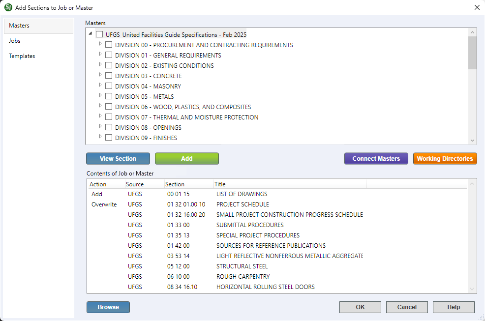

v
This command can also be executed from the SpecsIntact Explorer's Toolbar, Right-click menu, or by using the keyboard shortcut Alt+A.
The Add Sections window provides three distinct tabs to pick the Sections to add to your Job or Master, specifically from Masters, other Jobs, Templates, or any combination of these sources. The Add Sections window automatically defaults to the Masters tab, providing immediate access to the primary UFGS Master or a primary Master of your choosing.
 Click the tabbed commands on the image below to see how to use each function.
Click the tabbed commands on the image below to see how to use each function.

 When you select a Master or Job, all underlying Divisions and Sections are automatically selected as well. Similarly, selecting a Division will automatically include all Sections within that Division.
When you select a Master or Job, all underlying Divisions and Sections are automatically selected as well. Similarly, selecting a Division will automatically include all Sections within that Division.
Additionally, the Add Sections window provides the following actions:
- View Section button - Allows you to preview a selected (highlighted) Section from the Jobs or Masters pane in the SI Editor before adding it. The added Sections will appear in the Contents of Job or Master pane.
- Add button - Allows you to add new or overwrite existing selected (checked) Sections to the Contents of Job or Master pane.
- Connect Masters button - Allows you to connect to other Masters available on your system, to expand the range of sources for adding Sections.
- Working Directories button - Provides convenient access to connect or disconnect Working Directories on your system while in the Add Sections window. Connecting to other Working Directories available on your system expands the range of sources for adding Sections from existing Jobs or Masters within those specific locations.
- Contents of Job or Master pane - Displays a list of the Sections to be added to the Job or local Master upon execution, showing key details like the Action, Source, Section Number, and Title.
- Action - Indicates a pending action (Add, Overwrite, or Delete) for Section(s) being added to the Job or local Master.
- Right-click a Section with a pending action to undo it and remove the Section from the Contents of Job or Master pane.
- Overwriting a previously edited Section from a Master will replace the Section with a new, unedited version. This change is permanent, and the original can only be restored from a prior backup of the Job or Section.
- Overwriting a Section using the Browse function deletes the current one and adds the new Section from its source location.
- Source - Indicates the origin of Sections being copied when you add them to your Job or Master. Possible sources include the UFGS Master, a local Master, another Job, or drive on your local system or network. If the software cannot identify the Section's origin, it will display Unknown. When the source displays Unknown, the Section cannot be overwritten from that source and must be added from the UFGS Master. This commonly happens when copying a Section from Windows File Explorer or another tool such as WinZip, the Recycle Bin, or possibly the SI Editor when using the Save As function when editing a Section outside of SpecsIntact.
- Browse button - Provides an extended option to search for Section (.sec) files in various locations on your system (e.g., Desktop or Documents folder) or connected network drives.
When tailored Sections are added to a Job, regardless of the method used, the Tailor Sections in Job window automatically opens. To learn more about this functionality, refer to the Tailoring topic.
 In the Jobs or Masters pane, use the Expand or Collapse buttons to show or hide the contents of a Master, Job, or Division. When incorporating multiple Sections from a specific Division, an efficient method is to initially select the Division and then deselect any undesired Sections.
In the Jobs or Masters pane, use the Expand or Collapse buttons to show or hide the contents of a Master, Job, or Division. When incorporating multiple Sections from a specific Division, an efficient method is to initially select the Division and then deselect any undesired Sections.
Standard Windows Commands
 The OK button will execute and save the selections made on all of the tabs.
The OK button will execute and save the selections made on all of the tabs.
 The Cancel button will close the window without recording any selections or changes entered.
The Cancel button will close the window without recording any selections or changes entered.
 The Help button will open the Help Topic for this window.
The Help button will open the Help Topic for this window.
How to Use this Feature
To Add Sections from The Add Sections Window:
- In the SpecsIntact Explorer, select a Job or local Master, then perform one of the following:
- Right-click and select Add Sections
- Click the Add Sections button on the Toolbar
- Select the File menu and select Add Sections
- Use the keyboard shortcut Alt+A
- In the Add Sections window, below the Masters pane, perform any of the following:
- Check the box next to a Division to select all its Sections
- Expand a Division(s), check the box next to one or more Sections
- Click the Jobs tab to add Sections from other Jobs or the Templates tab to add the UFGS Section Template for new Sections
- Once the Section(s) are selected, click the Add button to add them to the Contents of Job or Master pane
- If you have selected all the required Sections, skip to Step 8
- If you want to add additional Sections only available on your system or network, click the Browse button
- In the Browse for Sections window, navigate to your Desktop, Documents, or network drive and select the Section (.sec) file(s)
- Click Open
- Once the Section(s) are displayed in the Contents of Job or Master pane, click OK
To Add Sections Using the SpecsIntact Explorer's Drag-And-Drop Copy feature:
- In the SpecsIntact Explorer, select the source Master or Job
- In the Contents pane, perform one of the following:
- To select a single Section, click-and-hold the mouse to drag-and-drop the Section to the target Job or local Master
- To select multiple consecutive Sections, select the first Section, press-and-hold the Shift key and select the last Section, then use the mouse to drag-and-drop the Sections to the target Job or local Master
- To select multiple non-consecutive Sections, press-and-hold the Ctrl key and select each Section, then use the mouse to drag-and-drop the Sections to the target Job or local Master
- On the Copy Files window, click Yes
- On the Section Copied window, click OK
To Add Sections Using the SpecsIntact Explorer's Copy and Paste feature:
- In the SpecsIntact Explorer, select the source Master or Job
- In the Contents pane, perform one of the following:
- To select a single Section to copy, select a Section, then press Ctrl+C
- To select multiple consecutive Sections, select the first Section, press-and-hold the Shift key and select the last Section, then press Ctrl+C
- To select multiple non-consecutive Sections, press-and-hold the Ctrl key and select each Section, then press Ctrl+C
- To paste the copied Sections, select the target Job or local Master, then press Ctrl+V
- On the Copy Files window, click Yes
- On the Section Copied window, click OK
Additional Learning Tools
 Watch all of the eLearning modules within Chapter 2 - Creating a Job and Adding Sections.
Watch all of the eLearning modules within Chapter 2 - Creating a Job and Adding Sections.
Users are encouraged to visit the SpecsIntact Website's Support & Help Center for access to all of our User Tools, including Web-Based Help (containing Troubleshooting, Frequently Asked Questions (FAQs), Technical Notes, and Known Problems), eLearning Modules (video tutorials), and printable Guides.